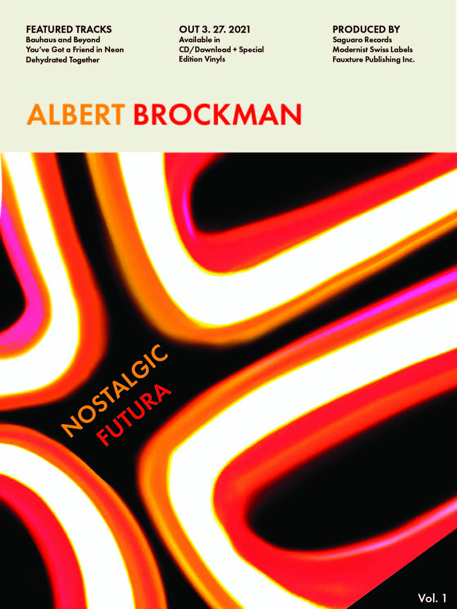
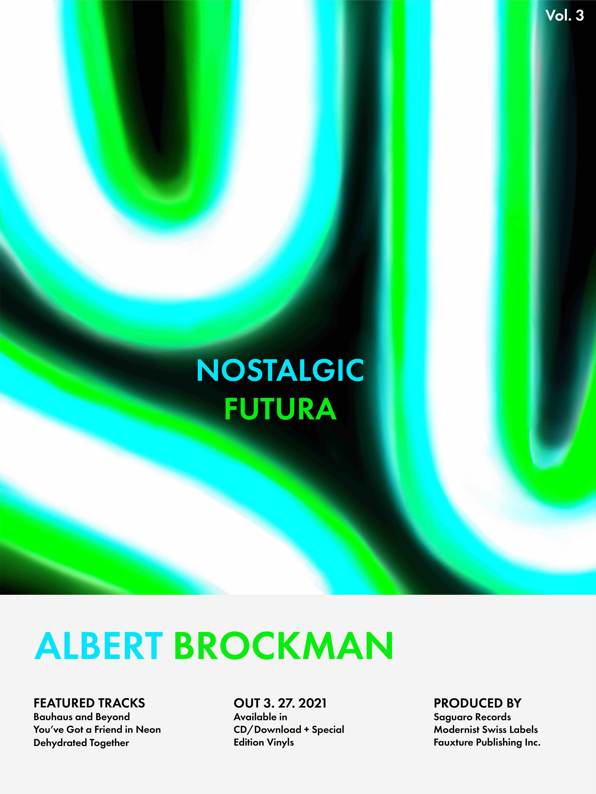
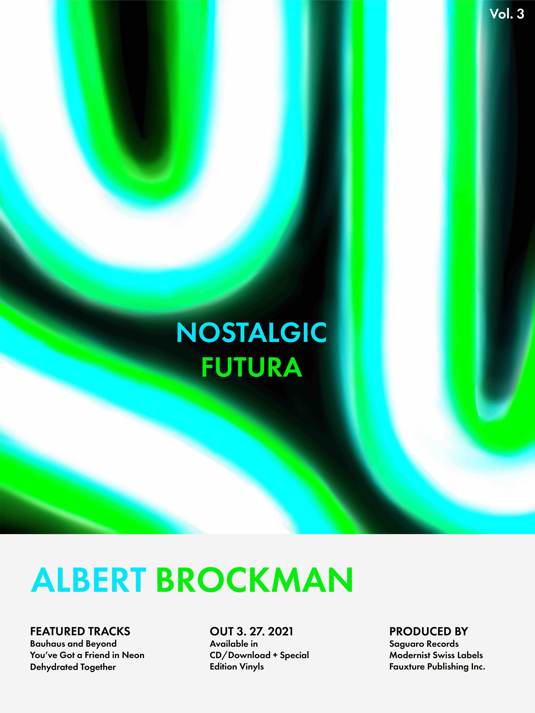
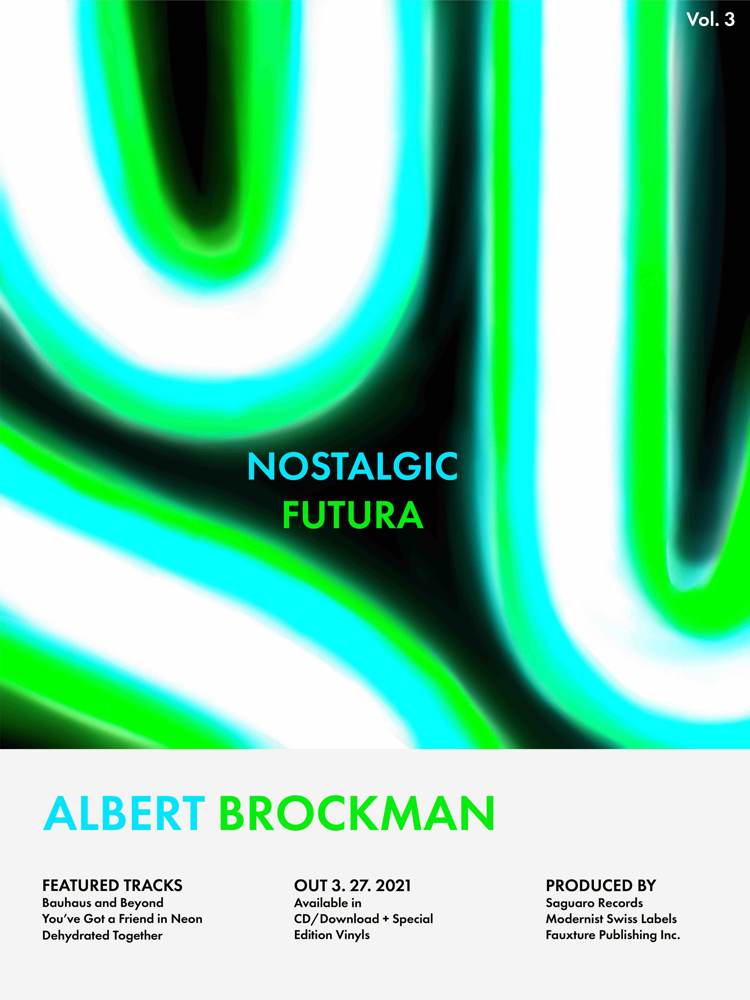

shriya Chunduri
About
Hello! This is Shriya Chunduri (she/her). I am graphic designer based in the NYC Metropolitan area. I am currently pursuing a Design degree at Mason Gross School of Arts, Rutgers University. I enjoy experimenting and creating print based as well as digital based media. I strive to create design with introspective concepts and meaningful design choices.
New York, NY
Last Updated: 2/22/2022
©2022
Last Updated: 2/22/2022
©2022
Back To The Future
Website design for my Design Class. The subject matter is my neon cactus signage light, a gift from my parents. My poster series (shown below) project led me to the interesting conundrum of neon lights, particularly their association with the past and the future. I wanted to further explore this theme of the collision of the past and the future. Some key inspirations include: Joseph Muller Brockman, Toy Story, 2000 Technology and Print Media
HTML & CSS
Varying Sizes
2021
Link

 

